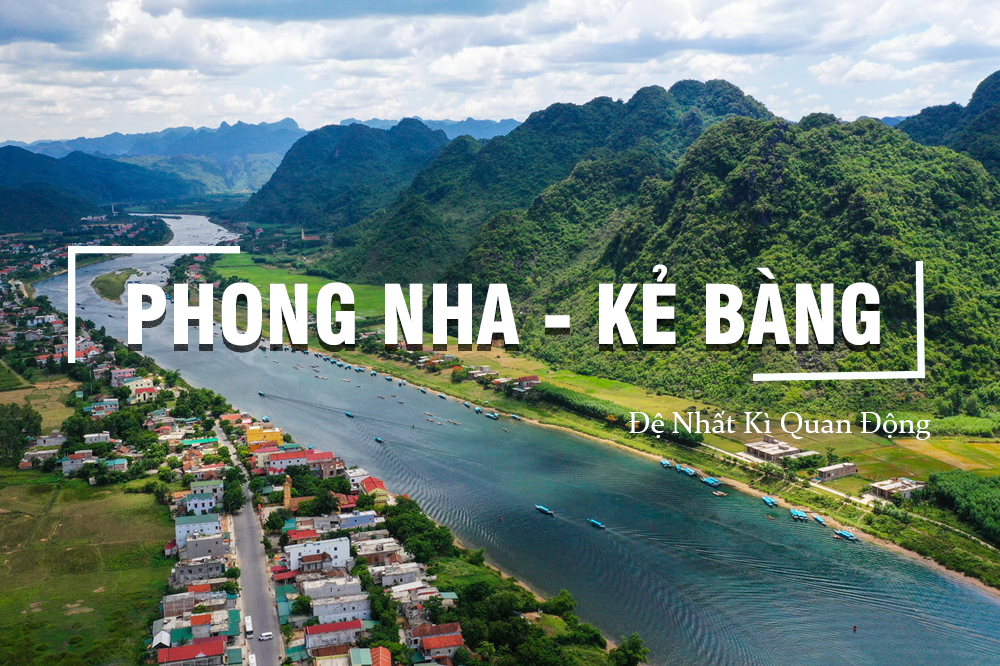
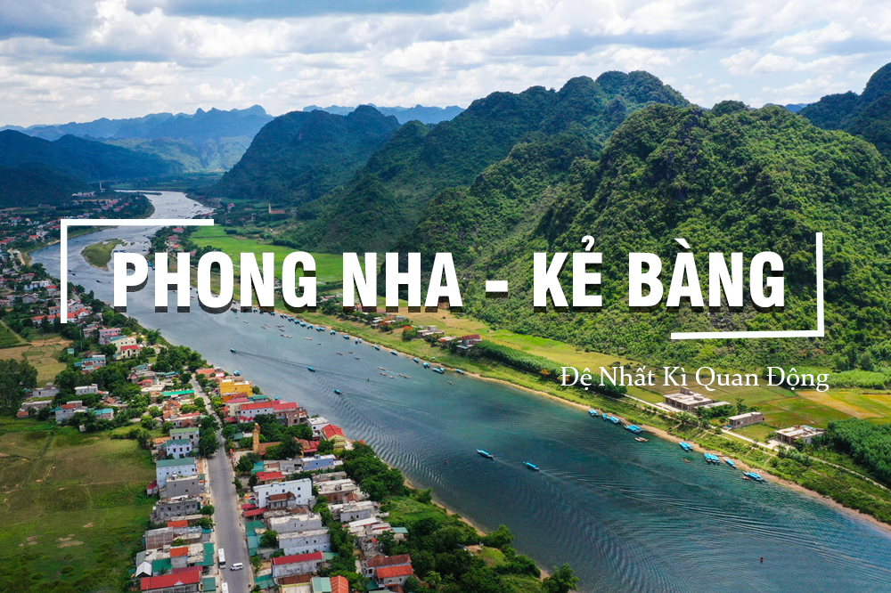

TAM CỐC - BÍCH ĐỘNG
Vịnh Hạ Long trên cạn
Tam Cốc – Bích Động thường được biết đến với những cảnh đẹp nên thơ, thanh bình nhưng không kém phần mỹ miều, làm say đắm lòng người, nơi được ưu ái bằng những cái tên đầy ví von “Nam thiên đệ nhị động” hay “Vịnh Hạ Long trên cạn”.
Tam Cốc – Bích Động đó là bạn có thể đi rồi về trong ngày, để tiết kiệm thời gian – hãy xuất phát từ sáng sớm vừa được hít hà không khí ban mai, vừa có một chuyến đi trọn vẹn vì Tam Cốc – Bích Động chỉ cách trung tâm Hà Nội tầm 110km. Cũng vì vậy, hành lí mang theo cũng không cần quá nhiều, chỉ cần vài đồ dùng đơn giản.
Phải nói Tam Cốc – Bích Động mùa nào cũng đẹp, mỗi mùa mang một vẻ đẹp riêng. Nhưng nếu bạn muốn chiêm ngưỡng những cánh đồng lúa xanh mơn mởn, tràn trề sức sống trải dài trên dòng sống uốn lượn thì dịp sau Tết vào độ tháng 1, tháng 2 là thời điểm thích hợp. Còn nếu bạn muốn ngắm nhìn một bức tranh tuyệt đẹp của tạo hóa với những nét chấm phá xen lẫn của màu vàng lúa chín, hòa quyện với màu xanh núi rừng và xa xa điểm xuyến bằng những con thuyền nhẹ trôi vô cùng thơ mộng thì nên đi tầm cuối tháng 5, đầu tháng 6
Quanh khu du lịch này có khá nhiều homestay và khách sạn, hội tụ đầy đủ những giá trị liên quan đến du lịch xanh, du lịch văn hóa.
Khu du lịch Tam Cốc gồm nhiều tuyến tham quan du thuyền, đi xe đạp và đi bộ nối khoảng gần 20 điểm du lịch.
Tam Cốc, có nghĩa là “ba hang”, gồm hang Cả, hang Hai và hang Ba, cả ba hang đều được tạo thành bởi dòng sông Ngô Đồng đâm xuyên qua núi. Muốn thăm Tam Cốc, du khách xuống thuyền từ bến trung tâm, uốn lượn trên sông Ngô qua các vách núi, hang xuyên thuỷ, cánh đồng lúa; thời gian đi và trở lại khoảng 2 giờ.
Bích Động nằm cách bến Tam Cốc 2 km, có nghĩa là “động xanh”; Bích Động gồm một động khô nằm trên lưng chừng núi (làm chùa Bích Động) và một hang động nước đâm xuyên qua lòng núi (gọi là Xuyên Thủy Động). Ngoài ra còn có chùa Bích Động, là một ngôi chùa cổ gắn với núi đá mang đậm phong cách Á Đông, được dựng từ đầu đời nhà Hậu Lê.

Cua đồng được rang giòn lên cùng với lá lốt, món ăn này đưa bạn về một miền quê nghèo Việt Nam những năm tháng xưa.

Lươn ở đây phải là lươn cốm với phần lưng màu nâu hồng còn bụng thì màu vàng đậm, nhỏ hơn lươn bình thường nhưng thịt lại săn chắc và vô cùng thơm ngọt.

Ở khu vực vùng ven đồng chiêm trũng Ninh Bình có rất nhiều cá rô đồng nên được tận dụng để chế biến ra món ăn cực kỳ hấp dẫn này.

 
